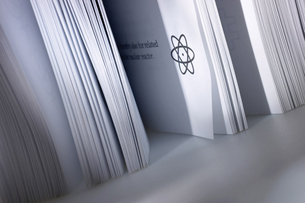

Module 1—Chemical Foundations
 Reflect and Connect
Reflect and Connect
Draw cartoons representing physical, chemical, and nuclear changes. Ensure your artwork illustrates the similarities and differences between the three types of change. Incorporate an understanding of the particle model of matter and the kinetic molecular theory. Share your cartoons with your classmates or some other people. Place copies of your cartoons into your chemistry folder, along with any comments and revisions you make based on the feedback from your classmates or other people.
 Discuss
Discuss
Produce a document that states your position for or against the use of nuclear technology. Give a brief explanation supporting your position. How have the lessons in Module 1 reshaped your views of nuclear technology? Share your document with your classmates or some other people.
Reflect on the Big Picture

© 2007 Jupiterimages Corporation
In Module 1 you learned about the role of science and technology in society, elements and ions, ionic compounds, molecular compounds, chemical change, and the kinetic molecular theory. You explored the roles of modelling, evidence, and theories when explaining and understanding the structure, bonding, and properties of ionic and molecular compounds. Throughout the module you studied these concepts in the context of nuclear energy, shaping your perspectives and understandings of nuclear technology.
 Module 1: Lesson 4 Assignment
Module 1: Lesson 4 Assignment
To complete your assignment as an online quiz, click on Module 1 Lesson 4 Assignment in the "Quizzes".
To complete your assignment as an MSWord document, click Module 1 Lesson 4 Assignment.